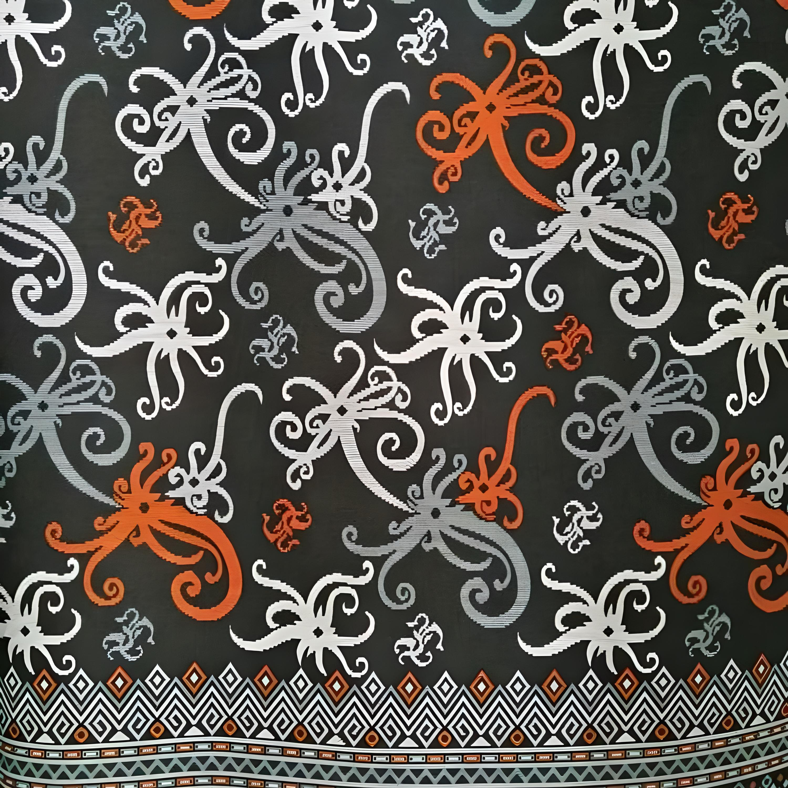
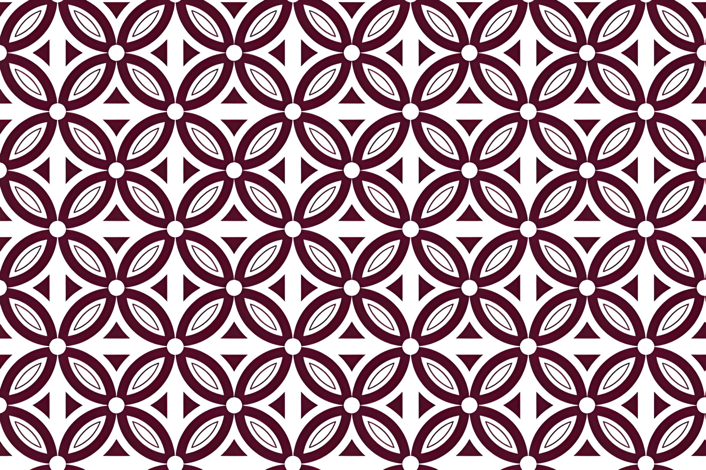
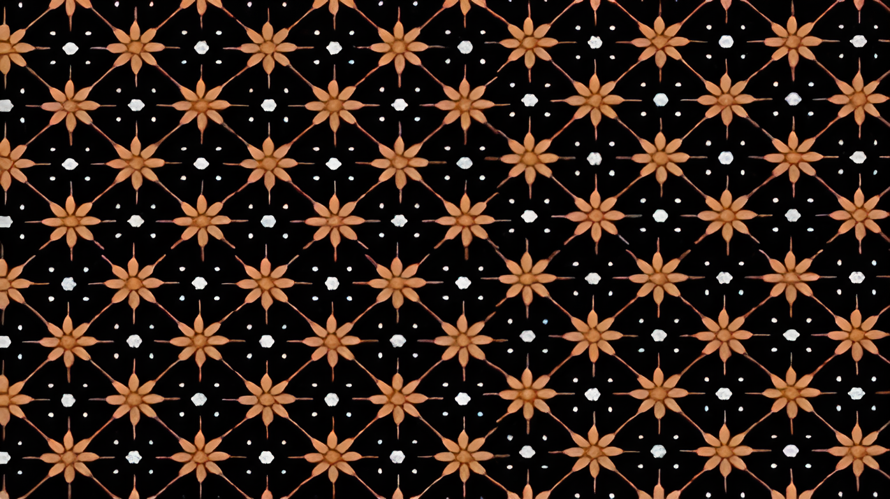

Home
Eksplor
Galeri
Artikel
About Us
<<
Galeri

Kalimantan Timur
Motif Batik Motif Kembang Kenanga
Motif kembang kenanga berharap siapapun yang memakai desain batik ini dapat memberikan manfaat bagi orang disekitarnya, seperti motifnya yakni bunga ylang ylang, yang harum dan memiliki banyak manfaat.
Sumber:
√ 30+ Motif Batik Kalimantan (TIMUR, BARAT, TENGAH, SELATAN, UTARA) (fasnina.com)
Anda mungkin tertarik :

